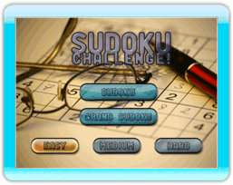
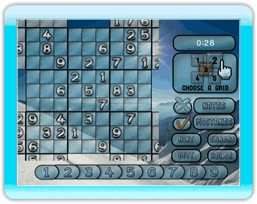

5 |
Modes de jeu |
 |

Sudoku Cette option lance le plateau de jeu classique neuf à neuf de Sudoku. L'objectif de ce casse-tête est de remplir chaque ligne et chaque colonne avec des chiffres allant de 1 à 9 sans aucune répétition. Chaque casse-tête commence avec quelques chiffres déjà à leurs places. Votre but est de compléter le casse-tête en utilisant les chiffres déjà placés comme indices.
 Grand Sudoku Grand Sudoku vous met au défi de compléter simultanément 5 grilles de Sudoku entrecroisées. Une grille miniature montrant les carrés entrelacés s'affichera sur la droite de l'écran. Appuyez sur le bouton A de la télécommande Wii au-dessus des différentes zones de la grille miniature pour passer d'une grille à l'autre.
Niveaux de difficulté Défi Sudoku vous propose trois niveaux de difficulté! – Débutant, Intermédiaire et Expert Ces niveaux définissent non seulement le nombre de chiffres relevés au départ mais aussi la facilité de compléter le casse-tête en vous servant des chiffres déjà placés comme des points de repère. Appuyez sur le bouton A au-dessus de l'option Débutant, Intermédiaire ou Expert pour choisir le niveau de difficulté, choisissez ensuite entre Sudoku et Grand Sudoku pour commencer le jeu. Pour changer le niveau de difficulté retournez au menu principal en appuyant sur le bouton «Quitter». |
 |
 |
 |